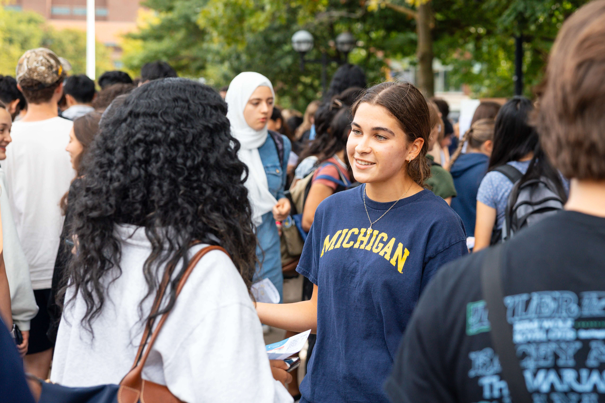
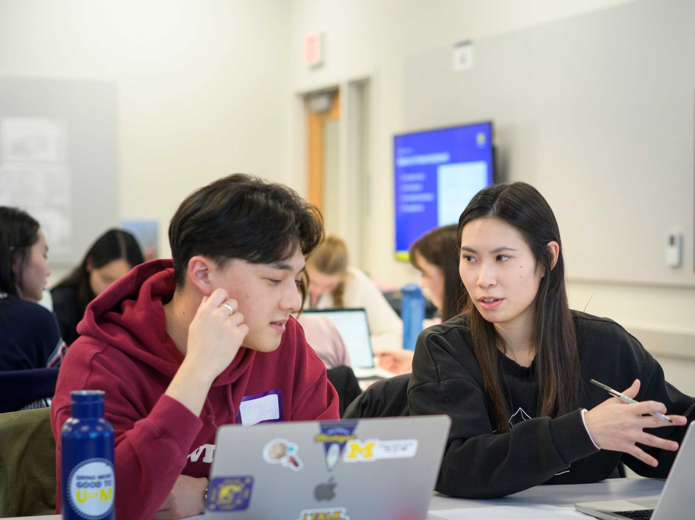
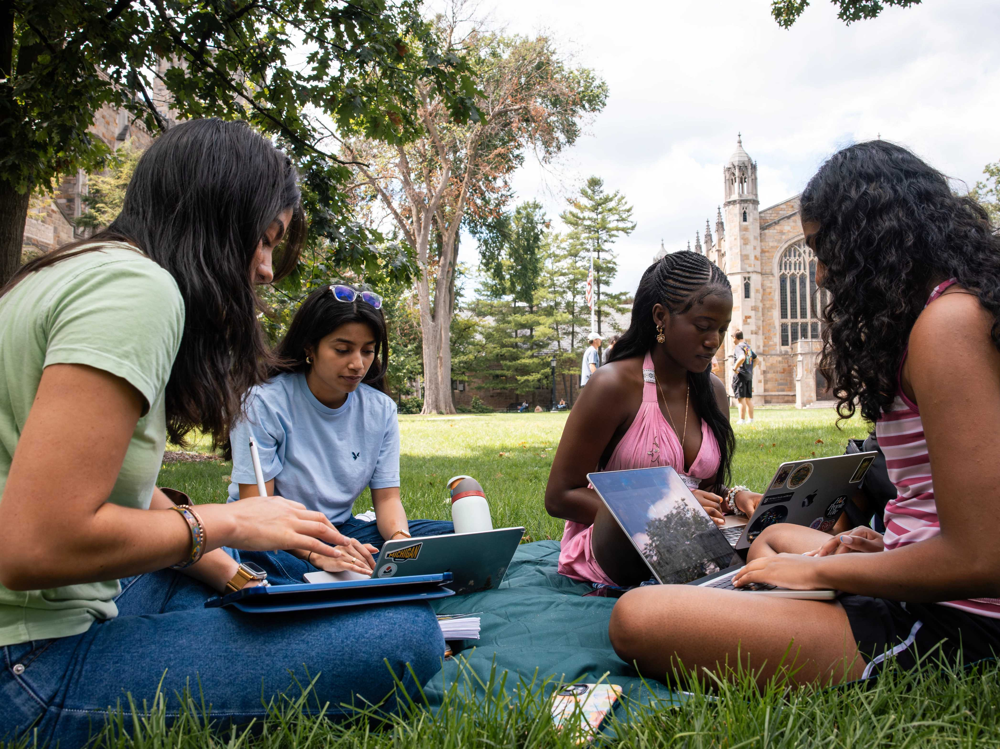

Initial Client Email Examples
Plug-and-play email templates for first contact with clients and partners.


First impressions shape the trajectory of a partnership. The starting phase is where abstract project ideas turn into structured, professional commitments. By establishing clear team contracts, co-creating agendas, and aligning on project scope early, you build psychological safety within your team and trust with your client. Learning how to navigate early ambiguity is one of the most valuable professional capabilities you will gain at UMSI.


Explore resources to form a strong relationship with your partners.
Plug-and-play email templates for first contact with clients and partners.
Step-by-step structure for running a professional kickoff call.
Principles for building reciprocal, respectful community relationships.
The Engaged Learning Office works with partners across industries and sectors, from technology companies to grassroots nonprofits and cultural heritage institutions, to provide project-based opportunities for UMSI students.
Its mission is to facilitate transformational engaged learning experiences and enable innovative, sustainable, and mutually beneficial information solutions for local and global communities.